Install Composer
Composer merupakan sebuah aplikasi package manager untuk menginstall berbagai file PHP, terutama library dan framework PHP. Package manager sendiri adalah sebutan untuk aplikasi yang bertugas mengelola dependency atau ketergantungan antar aplikasi. Composer terinspirasi dari npm (singkatan dari Node Package Manager), yakni aplikasi package manager yang lebih dahulu hadir untuk bahasa pemrograman JavaScript.
Menginstall Composer sama seperti proses instalasi program lain. Donwload file installer dari web resminya di Getcomposer.org. Untuk mulai proses instalasi double klik file Composer-Setup.exe. Di jendela pertama, biarkan checkbox Developer mode kosong dan langsung saja klik tombol Next.
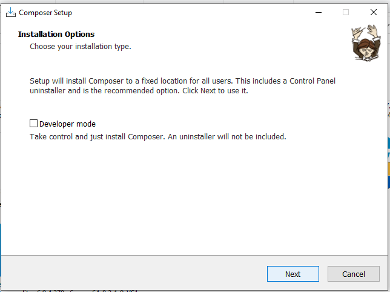
Composer akan mencari di mana file php.exe berada, klik tombol Next.
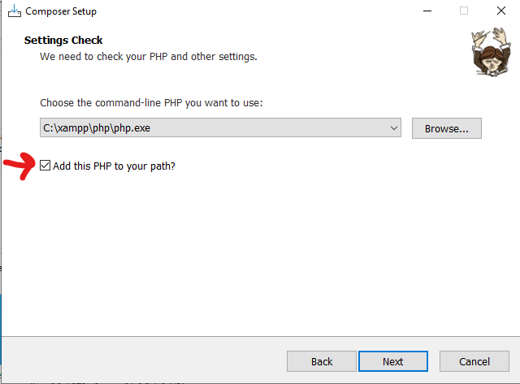
Untuk jendela inputan proxy tidak perlu diisi dan langsung saja klik tombol Next.
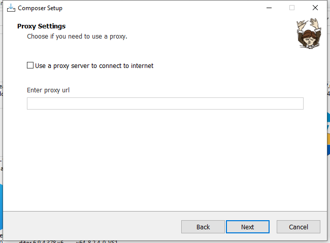
Kemudian klik tombol Install. Tunggu beberapa saat, klik tombol Next dan Finish. Maka composer sudah sukses terinstall.
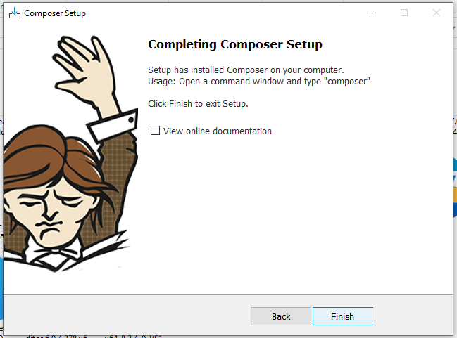
Untuk memeriksa apakah composer sudah berhasil di install atau tidak, buka cmd, ketik composer dan tekan Enter. Jika sukses menginstall, composer akan muncul tampilan text di bawah ini:
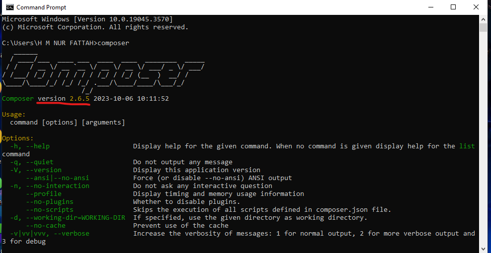
Install Laravel
Laravel adalah satu-satunya framework yang membantu untuk memaksimalkan penggunaan PHP di dalam proses pengembangan website. PHP menjadi bahasa pemrograman yang sangat dinamis, tetapi sejak adanya Laravel menjadi lebih powerful, cepat, aman, dan simple. Dalam dokumentasi resmi Laravel dijelaskan bahwa terdapat 2 cara instalasi Laravel. Pertama dengan perintah composer create-project, dan yang kedua dengan laravel installer. Berikut adalah tahapan install laravel menggunakan composer create-project.
Silahkan buka cmd lalu pindah ke folder htdocs XAMPP dengan perintah:
cd C:\xampp\htdocs
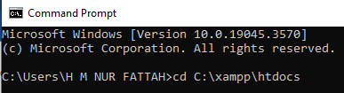
Kemudian ketik atau copy perintah berikut:
composer create-project --prefer-dist laravel/laravel belajar_laravel
Perintah ini terdiri dari beberapa bagian:
- composer : menjalankan composer
- create-project : membuat sebuah proyek
- --prefer-dist : memilih versi stabil terbaru dari framework Laravel
- belajar_laravel : menyimpan semua file proyek ke dalam folder belajar_laravel, ini adalah nama proyek yang akan dibuat, silahkan disesuaikan dengan keinginan.
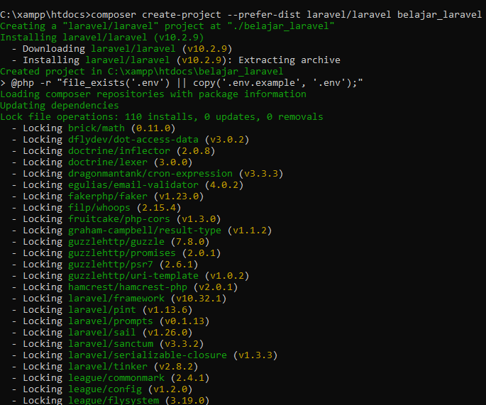
Jika teks "Application key set successfully" muncul, dan kursor kembali ke C:\xampp\htdocs, berarti proses instalasi Laravel telah selesai.
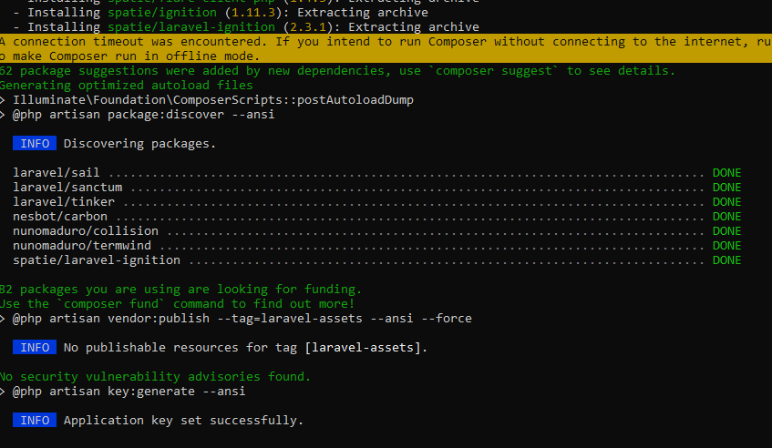
Untuk mengakses Laravel, buka cmd dan masuk ke folder instalasi Laravel:
cd C:\xampp\htdocs\belajar_laravel
Saat berada di dalam folder Laravel, jalankan web server dengan perintah berikut dan tekan enter:
php artisan serve
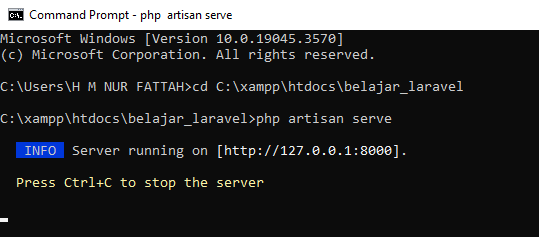
Jika teks "Server running on [http://127.0.0.1:8000]" muncul, server aktif dan dapat diakses. Buka web browser dan masukkan alamat http://127.0.0.1:8000
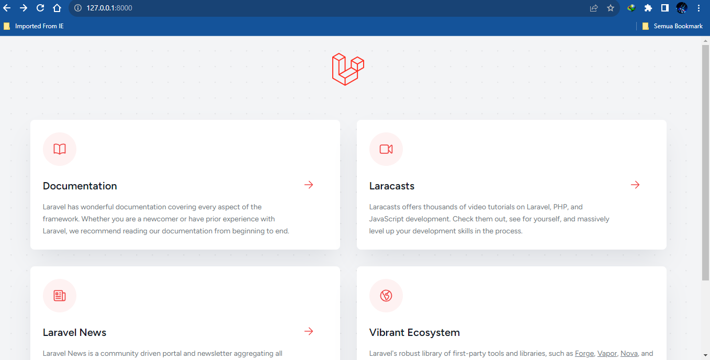
Selanjutnya, lihat apa saja yang ada di dalam folder Laravel:
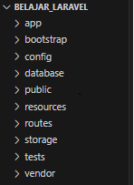
Berikut penjelasan singkat dari isi setiap folder Laravel:
- App : berisi berbagai file untuk aplikasi yang akan di bangun. Dalam folder inilah nantinya kita membuat controller dan model.
- Bootstrap : berisi file app.php yang berfungsi sebagai bootstrap atau file pengaturan awal dari Laravel. Selain itu terdapat juga folder cache untuk meningkatkan performa aplikasi. Sebagai info tambahan, nama folder ini tidak ada kaitannya dengan framework CSS Bootstrap. Dalam istilah komputer, bootstrap memiliki makna yang sama dengan booting yakni proses awal dari sebuah aplikasi.
- Config : berisi berbagai file konfigurasi Laravel. Folder ini cukup sering kita akses karena di sinilah berbagai pengaturan Laravel tersimpan.
- Database : berisi folder dan file yang ‘mengurusi’ database seperti migrations, factories dan seeds. Folder database ini juga bisa dipakai sebagai tempat menyimpan file tabel database SQLite (jika anda menggunakan SQLite).
- Public : berisi file index.php sebagai file awal dari semua request ke aplikasi Laravel. File index.php inilah yang nanti memanggil berbagai file-file lain. Namun kita tidak akan meng-edit file index.php ini secara langsung.
- Resource : berisi file resource ‘mentah’ seperti file CSS dan JavaScript. Di sini juga nantinya kita membuat view.
- Routes : berisi file yang akan menangani proses routing.
- Storage : berisi tempat penyimpanan file yang di generate oleh Laravel, seperti file log. Jika kita membuat form upload, file tersebut juga bisa disimpan di sini.
- Test : berisi file untuk proses testing seperti PHPUnit.
- Vendor : Berisi berbagai file internal framework Laravel. Di sinilah semua library dependency Laravel berada. Folder vendor ini mencakup 90% ukuran framework laravel (33MB yang terdiri lebih dari 8000an file). Meskipun berisi banyak file, folder ini tidak perlu kita utak-atik.